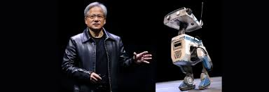

About Groot N1
NVIDIA's Groot N1 is a revolutionary humanoid robotics platform, blending advanced AI models with
simulation frameworks. Explore its remarkable possibilities.

.jpg)
Latest Blogs
Introduction
Now Available, Fully Customizable Foundation Model Brings Generalized Skills and Reasoning to Humanoid
Robots
NVIDIA, Google DeepMind and Disney Research Collaborate to Develop Next-Generation Open-Source Newton
Physics Engine
New Omniverse Blueprint for Synthetic Data Generation and Open-Source Dataset Jumpstart Physical AI Data
Flywheel
ABOUT GROOT 1
GR00T N1 Advances Humanoid Developer Community
The GR00T N1 foundation model features a dual-system architecture, inspired by principles of human
cognition. “System 1” is a fast-thinking action model, mirroring human reflexes or intuition. “System 2”
is a slow-thinking model for deliberate, methodical decision-making.
Powered by a vision language model, System 2 reasons about its environment and the instructions it has
received to plan actions. System 1 then translates these plans into precise, continuous robot movements.
System 1 is trained on human demonstration data and a massive amount of synthetic data generated by the
NVIDIA Omniverse™ platform.
GR00T N1 can easily generalize across common tasks — such as grasping, moving objects with one or both
arms, and transferring items from one arm to another — or perform multistep tasks that require long
context and combinations of general skills. These capabilities can be applied across use cases such as
material handling, packaging and inspection.
Developers and researchers can post-train GR00T N1 with real or synthetic data for their specific
humanoid robot or task.
In his GTC keynote, Huang demonstrated 1X’s humanoid robot autonomously performing domestic tidying
tasks using a post-trained policy built on GR00T N1. The robot’s autonomous capabilities are the result
of an AI training collaboration between 1X and NVIDIA.
“The future of humanoids is about adaptability and learning,” said Bernt Børnich, CEO of 1X
Technologies. “While we develop our own models, NVIDIA’s GR00T N1 provides a significant boost to robot
reasoning and skills. With minimal post-training data, we fully deployed on NEO Gamma — advancing our
mission of creating robots that are not just tools, but companions capable of assisting humans in
meaningful, immeasurable ways.”
Among the additional leading humanoid developers worldwide with early access to GR00T N1 are Agility
Robotics, Boston Dynamics, Mentee Robotics and NEURA Robotics.
More Data to Advance Robotics Post-Training
Large, diverse, high-quality datasets are critical for robot development but costly to capture. For
humanoids, real-world human demonstration data is limited by a person’s 24-hour day.
Announced today, the NVIDIA Isaac GR00T Blueprint for synthetic manipulation motion generation helps
address this challenge. Built on Omniverse and NVIDIA Cosmos Transfer world foundation models, the
blueprint lets developers generate exponentially large amounts of synthetic motion data for manipulation
tasks from a small number of human demonstrations.
Using the first components available for the blueprint, NVIDIA generated 780,000 synthetic trajectories
— the equivalent of 6,500 hours, or nine continuous months, of human demonstration data — in just 11
hours. Then, combining the synthetic data with real data, NVIDIA improved GR00T N1’s performance by 40%,
compared with using only real data.
To further equip the developer community with valuable training data, NVIDIA is releasing the GR00T N1
dataset as part of a larger open-source physical AI dataset — also announced at GTC and now available on
Hugging Face.
Availability
NVIDIA GR00T N1 training data and task evaluation scenarios are now available for download from Hugging
Face and GitHub. The NVIDIA Isaac GR00T Blueprint for synthetic manipulation motion generation is also
now available as an interactive demo on build.nvidia.com or to download from GitHub.
The NVIDIA DGX Spark personal AI supercomputer, also announced today at GTC, provides developers a
turnkey system to expand GR00T N1’s capabilities for new robots, tasks and environments without
extensive custom programming.
The Newton physics engine is expected to be available later this year.
Learn more by watching the NVIDIA GTC keynote and register to attend key Humanoid Developer Day
sessions, including:
“An Introduction to Building Humanoid Robots” for a deep dive into NVIDIA Isaac GR00T;
“Insights Into Disney’s Robotic Character Platform” to learn how Disney Research redefines entertainment
robotics with BDX droids; and
“Announcing Mujoco-Warp and Newton: How Google DeepMind and NVIDIA Are Supercharging Robotics
Development” for a deeper look into these new technologies and how Google deploys AI models to train
AI-powered humanoids for real-world tasks.
About NVIDIA
NVIDIA (NASDAQ: NVDA) is the world leader in accelerated computing.
Certain statements in this press release including, but not limited to, statements as to the benefits,
impact, availability, and performance of NVIDIA’s products, services, and technologies; NVIDIA’s
collaborations with third parties; third parties adopting or offering NVIDIA’s products and
technologies; and with NVIDIA Isaac GR00T N1 and new data generation and robot-learning frameworks,
robotics developers everywhere opening the next frontier in the age of AI are forward-looking statements
that are subject to risks and uncertainties that could cause results to be materially different than
expectations. Important factors that could cause actual results to differ materially include: global
economic conditions; our reliance on third parties to manufacture, assemble, package and test our
products; the impact of technological development and competition; development of new products and
technologies or enhancements to our existing product and technologies; market acceptance of our products
or our partners' products; design, manufacturing or software defects; changes in consumer preferences or
demands; changes in industry standards and interfaces; unexpected loss of performance of our products or
technologies when integrated into systems; as well as other factors detailed from time to time in the
most recent reports NVIDIA files with the Securities and Exchange Commission, or SEC, including, but not
limited to, its annual report on Form 10-K and quarterly reports on Form 10-Q. Copies of reports filed
with the SEC are posted on the company's website and are available from NVIDIA without charge. These
forward-looking statements are not guarantees of future performance and speak only as of the date
hereof, and, except as required by law, NVIDIA disclaims any obligation to update these forward-looking
statements to reflect future events or circumstances.
Many of the products and features described herein remain in various stages and will be offered on a
when-and-if-available basis. The statements above are not intended to be, and should not be interpreted
as a commitment, promise, or legal obligation, and the development, release, and timing of any features
or functionalities described for our products is subject to change and remains at the sole discretion of
NVIDIA. NVIDIA will have no liability for failure to deliver or delay in the delivery of any of the
products, features or functions set forth herein.